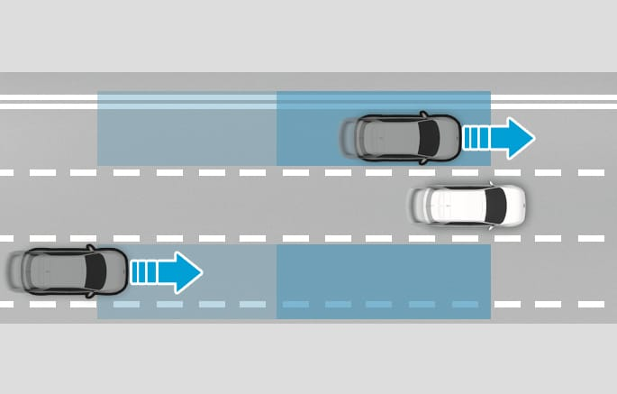
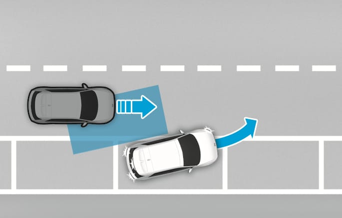

후측방 충돌방지 보조 작동

2C_BCAOperation
후방 좌우 차로에 차량이 인식되면 다음 조건에서 클러스터, 사이드 미러와 헤드업 디스플레이(사양 적용 시)에 경고등이 켜집니다.
-
자차 속도: 약 20 km/h 이상
-
후측방 차량 속도: 약 10 km/h 이상
차량 인식 상태에서 후측방 차량이 있는 방향으로 방향지시등을 켜면 다음 조건에서 충돌 경고를 합니다.
-
자차 속도: 약 40 km/h 이상
-
후측방 차량 속도: 약 10 km/h 이상
-
후측방 레이더의 인식 영역은 일반 도로의 표준 도로 폭에 따라 결정됩니다. 폭이 좁은 도로에서는 옆 옆 차로에서 주행 중인 차량에 대해 경고할 수 있습니다. 반대로, 폭이 넓은 도로에서는 옆 차로에서 주행 중인 차량을 인식하지 못하여 경고하지 않을 수 있습니다.
-
비상 경고등을 작동시킨 경우 방향지시등에 의한 충돌 경고는 작동하지 않습니다.
-
경고 영역은 자차의 속도에 따라 변경됩니다.
-
사각 지대에 차량이 있더라도 자차가 빠른 속도로 추월할 경우 경고를 하지 않습니다.
-
고속으로 접근하는 차량의 속도에 따라 위험을 알려주는 시점은 다를 수 있습니다.
좌회전할 때 충돌 경고가 발생할 수 있습니다. 항상 옆 차량과의 거리를 유지하십시오.

2C_BCAOperation_3
운전자가 출차 방향으로 스티어링 휠을 약 한 바퀴 돌리고 전진 출차 시, 다음 조건에서 충돌 위험이 있으면 경고 및 제동합니다.
-
자차 속도: 약 3 km/h 이하
-
후측방 차량 속도: 약 5 km/h 이상
제동으로 정차한 경우, 제동이 약 2초간 유지됩니다. 안전을 위해 즉시 브레이크 페달을 밟고 주변 상황을 확인하십시오.
-
다른 기능의 경고문이 표시되거나 경고음이 울리는 동안에는 후측방 충돌방지 보조의 경고문이 표시되지 않거나 경고음이 울리지 않을 수 있습니다.
-
차량 내/외부 소리로 인해 후측방 충돌방지 보조의 경고음이 들리지 않을 수 있습니다. 차량 내부 음량을 적절하게 조절하고 항상 주의를 기울이십시오.
-
충돌 위험 상황에서 브레이크 페달을 밟으면 후측방 충돌방지 보조가 작동하지 않을 수 있습니다.
-
후측방 충돌방지 보조가 작동할 때 가속 페달을 과하게 밟거나 스티어링 휠을 급격히 조작할 경우 제동 제어는 해제됩니다.
-
후측방 충돌방지 보조 작동 시 탑승자 및 차량 내 물건이 움직여 다칠 수 있으므로 항상 주의를 기울이고 반드시 전 좌석에서 안전 벨트를 착용하십시오.
-
후측방 충돌방지 보조에 이상이 있어도 브레이크 페달 조작에 의한 제동 기능은 정상적으로 작동합니다.
-
후측방 충돌방지 보조는 모든 상황에서 작동하지 않으며, 작동하더라도 충돌을 피하지 못할 수 있습니다.
-
후측방 충돌방지 보조는 주위 상황 및 주행 조건에 의해 경고를 늦게 하거나 하지 않을 수도 있으므로 위험 상황에 대비하여 항상 주위를 확인하십시오.
-
차량 조작의 책임은 운전자에게 있습니다. 후측방 충돌방지 보조에만 의존하여 위험하게 주행하지 마시고, 항상 주변 상황을 직접 확인하고 안전 운전하십시오.
-
절대 사람이나 사물을 대상으로 기능을 시험하지 마십시오. 심각한 부상이나 사망에 이를 수 있습니다.
-
전방의 차량, 이륜차, 보행자 및 자전거 탑승자의 상태 및 주변 환경에 따라 기능이 작동할 수 있는 속도의 범위가 줄어들 수 있습니다. 또한 속도에 따라 경고만 하거나 기능이 작동하지 않을 수 있습니다.
-
상대 차량의 상태, 주행 방향, 속도 및 주변 환경에 따라 위험도를 판단하여 특정 조건에서만 작동합니다.
-
후측방 충돌방지 보조는 작동 시 다른 주변 차량과의 충돌이 예상되면 조향 제어는 하지 않고 경고만 합니다.
-
차체 자세 제어(ESC) 장치가 다음과 같은 상태인 경우 계기판에 경고문이 표시되어도 제동 제어가 작동하지 않을 수 있습니다.
-
차체 자세 제어(ESC) 장치 경고등이 켜진 경우
-
차체 자세 제어ESC) 장치가 다른 기능을 수행하는 경우
-